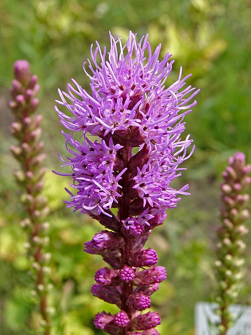

Native plants in Virginia include wildflowers, grasses, and shrubs that are native to the region. Some of these plants serve as a source of food for pollinators and wildlife. Native grasses in Virginia help to stabilize the soil and improve the quality of water in open areas and along water bodies. Native plants in Virginia help to create ecosystems that can thrive without any human intervention.
Click here to learn more about the native plants of Virginia
Identifying native plants is significant since they form the base of the local environment and have co-evolved with native wildlife and environmental factors. Native plants offer the best food and habitat for local wildlife such as insects and birds. These plants are usually more adapted to the environment and therefore require less water and maintenance compared to non-native species. It is essential to appreciate and understand native plants since this will help us avoid the spread of invasive species, which may result in negative effects on biodiversity and ecosystems.
Virginia's native trees are as diverse as the climates and landscapes in the state. There are trees that are native to the coastal plains and mountain forests. There are deciduous and evergreen native trees that are native to Virginia. These native trees are very important in maintaining soil stability and providing support for wildlife. There are diverse forest ecosystems that are native to Virginia.
Click here to learn more about the native trees of Virginia